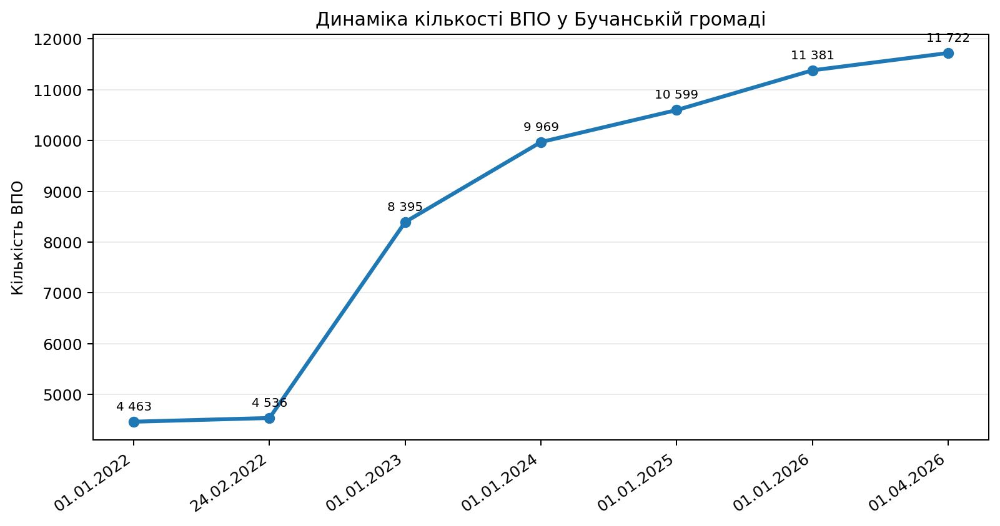
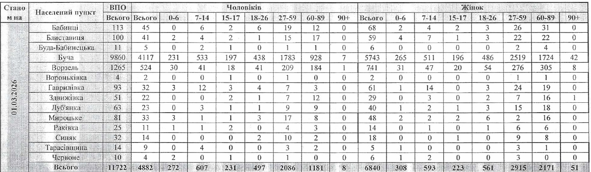
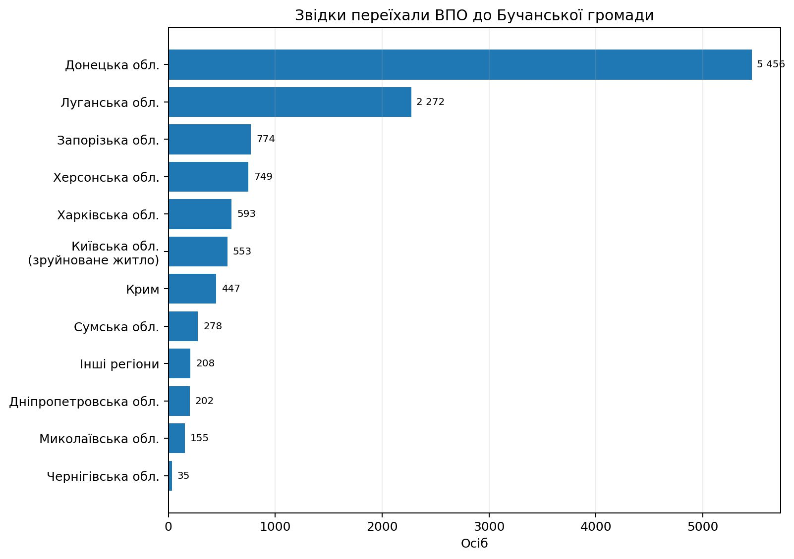
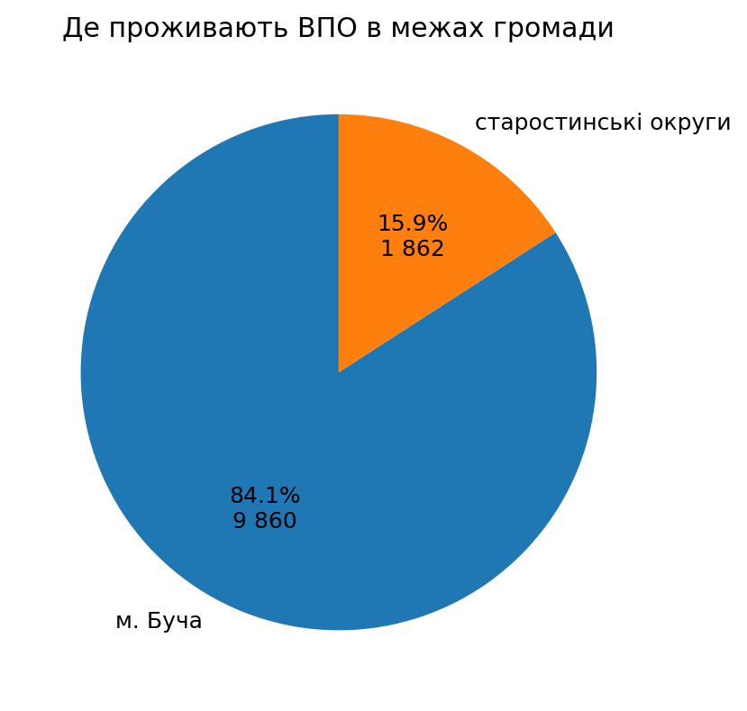
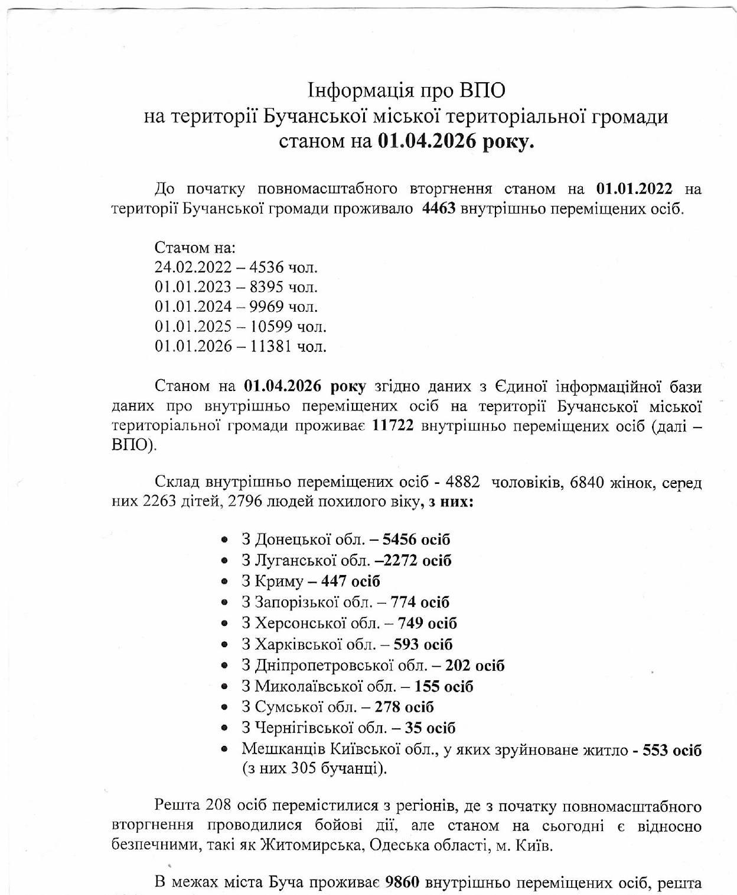

1
Стереотип
Людину починають оцінювати не за діями, а за статусом ВПО або регіоном походження.
Студентський проєкт про упереджене ставлення до внутрішньо переміщених осіб: звідки виникають стереотипи, як вони впливають на інтеграцію і що може зробити громада, бізнес та влада.
Перейти до аналітикиУпередження щодо ВПО часто проявляється не як відкрита ворожість, а як побутове дистанціювання: «вони отримують більше», «вони не наші», «вони тимчасові». Через це люди, які втратили дім або безпеку, можуть одночасно шукати допомогу й доводити, що вони мають право бути частиною нової громади.
Людину починають оцінювати не за діями, а за статусом ВПО або регіоном походження.
Упередження ускладнює оренду житла, працевлаштування, комунікацію з сусідами та участь у житті громади.
Інтеграція працює тоді, коли ВПО сприймають не як «отримувачів допомоги», а як мешканців із досвідом, навичками і правом голосу.
Аналітика побудована на даних Бучанської міської територіальної громади станом на 01.04.2026.

З 01.01.2022 до 01.04.2026 кількість ВПО збільшилася з 4 463 до 11 722 осіб.

У громаді проживають 4 882 чоловіки, 6 840 жінок, серед них 2 263 дітей і 2 796 людей похилого віку.

Найбільші групи — з Донецької та Луганської областей. Це пояснює, чому тема «своїх» і «чужих» часто пов’язана з регіональними стереотипами.

9 860 ВПО проживають у місті Буча, 1 862 — у старостинських округах громади.

Вихідний документ Бучанської громади з ключовими показниками про ВПО станом на 01.04.2026.
| Показник | Кількість | Що це означає для теми упереджень |
|---|---|---|
| Загальна кількість ВПО у Бучанській громаді | 11 722 | Йдеться не про окремі випадки, а про значну частину життя громади. |
| Жінки | 6 840 | Підтримка має враховувати питання праці, догляду за дітьми, безпеки та соціальної адаптації. |
| Чоловіки | 4 882 | Стереотипи про «утриманців» не пояснюють реальної структури громади й потреб людей. |
| Діти | 2 263 | Інтеграція залежить від доступу до школи, садка, гуртків і безпечного середовища. |
| Люди похилого віку | 2 796 | Потрібні не лише виплати, а й медичні, соціальні та комунікаційні послуги. |
| Проживають у місті Буча | 9 860 | Більшість ВПО щоденно взаємодіють із міською інфраструктурою та місцевими мешканцями. |
| Проживають у старостинських округах | 1 862 | Інтеграційні рішення мають працювати не лише в центрі громади, а й у старостинських округах. |
Табличні дані переоформлено у зручний для читання формат без використання сирої фотографії таблиці.
Щоб не зводити тему до сухої статистики, ми поєднали її з поясненням історичних стереотипів і практичним досвідом роботи з ВПО на рівні громади.
У ХІХ — першій половині ХХ ст. українські регіони часто належали до різних держав, тому між ними було мало комунікації. Через це образи «своїх» і «чужих» формувалися радше навколо етнічних і релігійних груп, а не навколо сучасних регіонів України.
Офіційно регіональні стереотипи не завжди насаджувалися прямо, але радянський і пострадянський простір закріплював образи «западняків», «бандерівців» або «Донбасу, який годує Україну». Такі штампи потім легко використовувала пропаганда.
Шкільний наратив часто концентрувався на Києві, Львові та частково Харкові. Через це інші регіони могли виглядати менш «видимими» в уявленні про Україну, що підтримувало стереотип «двох Україн».
Так, але лише частково. Війна змусила багатьох українців заново усвідомити, що східні й південні території — це не абстрактна «інша Україна», а частина спільного дому.
Питання впливу травм на ставлення до переселенців потребує окремих досліджень. Важливо не підміняти дослідження припущеннями.
Найчастіше заважають нестабільність програми «Прихисток», скасування частини виплат на проживання, нестача місць у садках і школах, а також складний доступ до пільгових кредитів на житло.
У підлітків і молоді можуть з’являтися самостигматизація, відчуття «життя на валізах», втрата ідентичності та захисна агресія. Тому дискримінація — це не лише соціальна, а й психологічна проблема.
Пропаганда підсилює міфи про «колективну провину», «ідеологічну чужість» та «дефіцит ресурсів». Це переводить розмову з рівня солідарності на рівень підозри.
Потрібні спільний інформаційний простір, заходи пам’яті й вшанування, інтеграційні хаби, комунікаційний моніторинг і швидке спростування конфліктних маніпуляцій.
Не сприймати ВПО як «об’єкт допомоги». Це люди з компетенціями, податками, досвідом і потенціалом для розвитку громади.
Стереотипи стають небезпечними тоді, коли вони переходять із розмов у рішення: кому здати квартиру, кого взяти на роботу, кого запросити в батьківський чат, чиє слово врахувати на громадських обговореннях.
Орендодавці можуть боятися затримок компенсацій або вважати ВПО «ризиковими» орендарями. Це підвищує нестабільність і залежність від тимчасових рішень.
Коли місць у садках і школах бракує, дитина може довше залишатися вдома. Це погіршує соціалізацію і посилює відчуття ізольованості родини.
Людина, яка переїхала, часто змінює професію або починає все заново. Підтримка має бути не лише фінансовою, а й професійною.
Упередження часто з’являється там, де люди не бачать прозорості: скільки коштів виділяється, на що саме вони йдуть і чи справді підтримка ВПО «забирає» ресурси в місцевих. Тому важливо говорити мовою відкритих даних.
За публічними повідомленнями про бюджет Львівської громади на 2026 рік, на соціальний захист і підтримку вразливих груп передбачено:
Це на 32,6 млн грн більше, ніж торік. Для нашої теми це показує: підтримка ВПО має розглядатися не як «привілей», а як частина ширшої політики соціальної стійкості громади.
Код 26256754 стосується Управління соціального захисту департаменту гуманітарної політики Львівської міської ради. У Prozorro можна бачити окремі договори й джерело фінансування.
Це не повна сума допомоги ВПО, а лише приклади закупівель управління, які варто відокремлювати від міфів про «надмірні привілеї».
Ці приклади показують, що інтеграція працює тоді, коли ВПО не відокремлюють від місцевих мешканців, а залучають до спільних рішень, роботи, волонтерства, освіти й розвитку громади.
У Павлоградській громаді, де офіційно зареєстровано понад 20,5 тис. ВПО, Рада ВПО ініціювала доповнення місцевої програми заходами з інтеграції. Було проведено опитування переселенців, бізнесу та місцевих мешканців, а пріоритетами стали інформаційна підтримка, інклюзія, працевлаштування і розвиток підприємництва. Окремий результат — понад 432 родини стали на облік для отримання тимчасового житла.
Чому це важливо для нашої теми: громада перестає сприймати ВПО лише як отримувачів допомоги і бачить їх як учасників ухвалення рішень.
У Липоводолинській громаді на Сумщині Рада ВПО разом із благодійним фондом, місцевою владою, громадськими організаціями та медіа створила інтеграційний простір. Там проводять заходи для адаптації ВПО до життя громади, а також зустрічі з емоційного розвантаження для мам із дітьми.
Чому це важливо для нашої теми: простір для зустрічей зменшує дистанцію між людьми, бо переселенці стають видимими як сусіди, батьки, працівники й активні мешканці.
В Ужгороді проводилися заходи на підтримку виборчих прав ВПО, зокрема форум-театр, де учасники моделювали ситуацію захисту права переселенця перед посадовцем. Завдяки залученню місцевих депутатів і громадських організацій міська рада звернулася до Верховної Ради щодо законодавчих змін у сфері виборчих прав мобільних громадян.
Чому це важливо для нашої теми: інтеграція означає не тільки допомогу, а й право ВПО впливати на рішення громади, у якій вони реально живуть.
У серії матеріалів «ВПО — Великий Приклад Об’єднання» переселенці розповідають історії інтеграції у нових громадах. Головна ідея таких історій — після базової допомоги людям потрібні не лише житло й робота, а й друзі, підтримка, соціалізація та можливість реалізувати свої навички.
Чому це важливо для нашої теми: реальні історії руйнують стереотипи краще за абстрактні заклики, бо показують внесок ВПО у спільне життя.
Найкращі рішення — ті, які замінюють поділ «ми/вони» на спільну участь у житті громади.
Два відео доповнюють тему сайту: вони допомагають подати проблему упередженого ставлення до ВПО через інтерв’ю та візуальне пояснення.